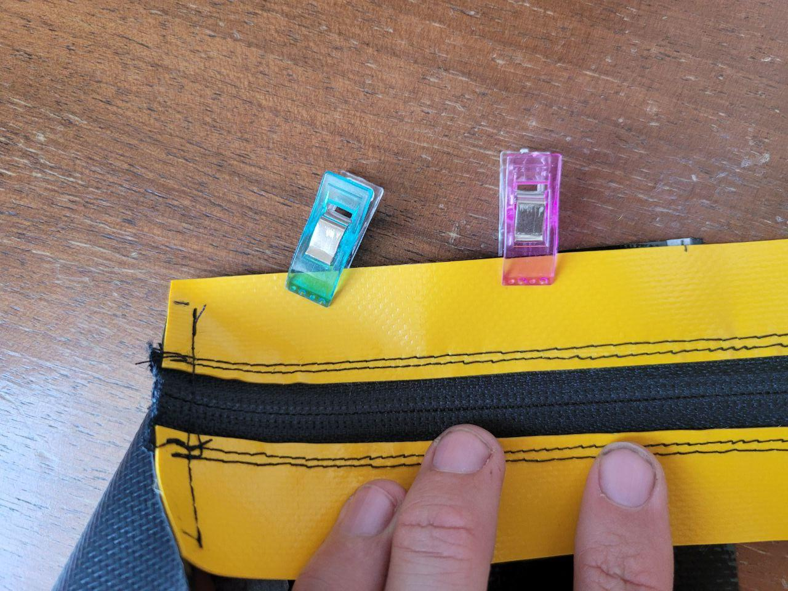

19) Saddle bag - how to
A small saddle bag is good for carrying a spare innertube and a few tools: hopefully you will never need these things when out riding, but it’s good to have them anyway.
Sewing this little bag is not so difficult, so long as you measure and mark meticulously. If you are sloppy, then the bag will have a wonky shape that will forever rest on your conscience…
In this post I’ll give some neat tips that make the process go smoothly.
The size of this bag is 5cm tall, 8cm wide and 10cm long, which is perfect for a road innertube and a few extra tools and stuff. A bag 6x9x12cm would be good for a gravel bike tube and still have room for several tools.
What you need
The bag needs to be able to withstand abrasion as it swings around on your saddle, so I used a PVC canvas (around 550g/m^2) that is hard wearing and durable.
You also need:
- zipper, around 30cm long
- 0.5m of webbing. I prefer 20mm webbing because it threads through the saddle rails more easily, but 25mm is more common so I used that here
- matching quick release for webbing
Cut out fabric
The bag consists of two pannels that are wrapped around eachother in a U-shape. Here I am using a 0.5cm seam allowance.
To make a bag with dimensions 5x8x10cm you need the body pannel to be 26x9cm (including seam allowance) and the zip pannel to be 29x6cm. I have found it easier to measure out the zip pannel in the dumb way. That is, take two pannels that are slightly taller than half of the intended final size, sew in the zip however you want, then trim the pannel down to the correct dimensions.
You’ll also want to mark the long edges of the pannels to aid in matching everything up. These marks are shown in the photo above and depend on the dimensions of the finished bag and seam allowance.
Prepare zip pannel
A top tip to help with zip alignment is to cut one side of the zip coil slightly shorter than the other then remove the pull from the zip. Now spread the zip slightly and reinsert the pull. This way you end up with a zip that is closed on both ends, making working with the pannel a lot easier.
Sew in the zip and topstitch.
Instead of measuring everything, its easier to make an over-sized pannel and cut it down to size
It’s nice to have a little cover for the zip pull when the bag is closed. It’s also an opportunity to add (mis)matching colour!
Sew up body
The process of sewing up the body is just aligning marks, making small cuts and turning. Here’s how it goes.
One both ends of the zip pannel mark the seam allowance. Match these marks to the marks in the centre of the body pannel and sew together, backstitching at the start and end.
On the body pannel, make a small cut at a 45 degree angle, ending with the seam you just made. Now turn the edge of the body pannel to match the edge of the zip pannel. The incision will make this possible
Match the mark at the end of the body pannel with the mark in the middle of the zipper pannel and sew together.

Then just play the same game: sewing each edge up individually, matching the marks and making small incisions to aid with turning the fabric. Eventually you will have a closed bag :D
Attach strap
You could attach the strap before assembling the bag, but then the strap would flail around annoyingly. Also possible is to sew the strap after the bag is constructed, but a bit fiddly.
I prefer to sew on the strap when about half of the sides are sewn up. This way the body piece can still be laid flat.
A 3.5cm wide box seam in the centre of the strap is all you need. I aligned the far edge of the strap 7cm away from the edge of the pannel.
It’s better to have the strap longer now and cut it down later than to sew a whole new one in…
Then sew on the buckles. Ideally you want the buckle to sit in the middle of the bag when on the bike. Getting this to happen may take some trial and error. On my bike, this works when the distance from the near edge of the box seam to the start of the fixed buckle is 10cm.
Finishing up
If you want you could bind the raw edges with grossgrain.

Gallery